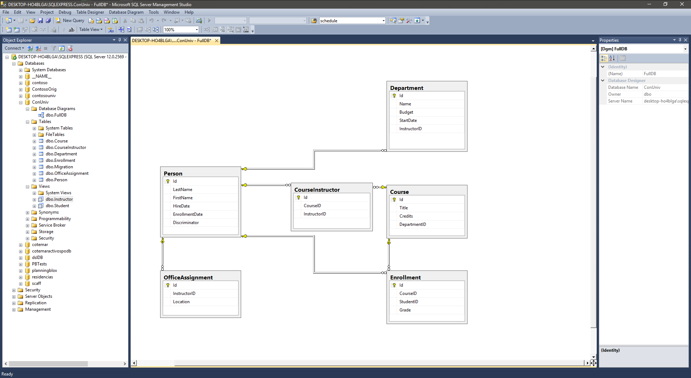
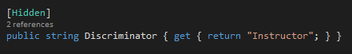
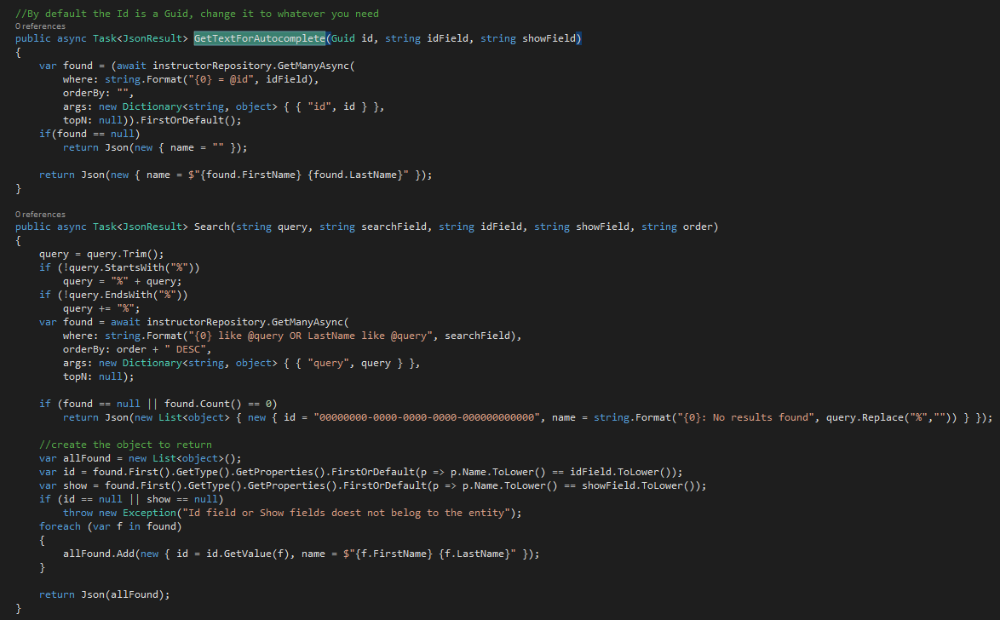
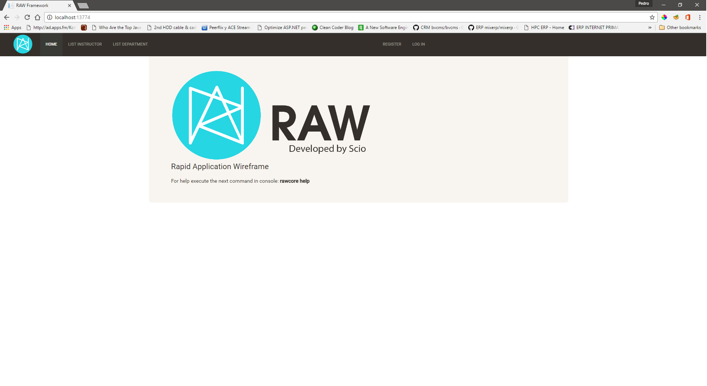
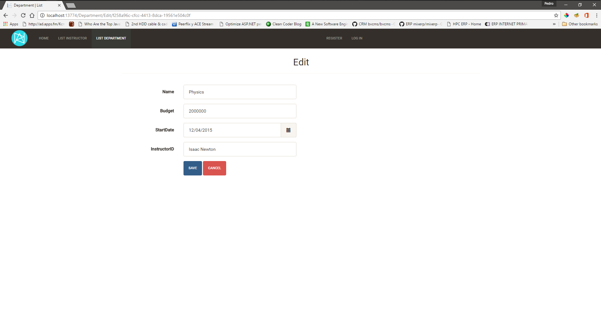
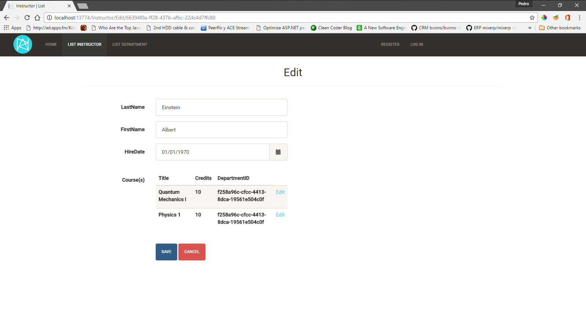

It's very importanxt that you understand the libraries used by RAW Framework
otherwise you will only see the framework in action but you will not be
able to modify the generated code or the templates to suit your needs,
so please visit the
prerequisites page and follow the links in that page.
The framework takes a solution template as an starting point for your application.
appsettings.json files located in the following folders:
Before you begin, be sure to have all the prerequisites installed.
This is tutorial is based on the Contoso University tutorial by Microsoft.
The database from the Contoso University tutorial from Microsoft is a little bit different to the one that we are going to use for this tutorial, the main difference is on some data types and that we use views to represent Students and Instructors instead of letting Entity Framework to automatically filter the data
Our DB Schema is represented in the following image:

Open a command prompt and navigate to a directory where your solution will be created, and run the following command:
rawc newApp
A name for your app will be asked, in this case we will use "ConUniv" as the name, remember that by default
the scaffolding and the application is going to look for a database named as your solution's name on your local SQL Server Express instance, in this case is ConUniv, a folder with the same name as your application will
be created and contains everything you need to start building your application. Type cd ConUniv and open the ConUniv.sln file with
Visual Studio 2015 or open the folder ConUniv.Web with Visual Studio Code, this is the Solution structure that you will see:
To start scaffolding we need to generate the models for the tables and views that we will be using, type the following commands to do it:
rawc new:model[Course]rawc new:model[Instructor]rawc new:model[Student]rawc new:model[Department]rawc new:model[CourseInstructor]rawc new:model[Enrollment]rawc new:model[OfficeAssignment]If you want to generate models for the whole database(only tables, not views) type the following command:
rawc new:full_db_models
Sometimes it's easier to generate all the models and then remove it the ones that you don't need.
If you navigate to your solution, you will notice that the models were added to the [ApplicationName].DataLayer project, under the Models folder.
Open one of the models, Department.cs for instance, and you will see that the model's properties have been decorated with some attributes,
Those decorators are used only when the UI is generated, so if you want to change them, do it before you generate the UI.
We will change a couple of them now, edit the Instructor and the Student files, we will replace the attributes added to the Discrimitator field,
we don't want the user to edit that field, so we replace them with the Hidden attribute, and the property in both classes should look like this:

For more information about all the available decorators go here.
At this point we could generate with the framework the controllers, repositories, views and javascript files that we need to have CRUD functionality for each one of the models, for isntance, the following command will generate all the code for the Course model:
rawc crudFor[Course]
Most of modern web applications use ajax to get and push data to the server but scaffolding solutions don't implement ajax calls, also many .Net code generators use helpers like HTML helpers or the new Tag helpers for the UI, Tag helpers was a huge improvement over HTML helpers but still are not enough for a few reasons:
rawc new:repository[Course]rawc new:repository[Instructor]rawc new:repository[Student]rawc new:repository[Department]rawc new:repository[CourseInstructor]rawc new:repository[Enrollment]rawc new:repository[OfficeAssignment]All the repositories were added to the [ApplicationName].DataLayer project, under the Repositories folder.
The repositories help us to interact with the database, we create a repository for each table or view that we want
to interact with, repositories inherit from the RepositoryBase class and you can override any of it's methods if you need or you can modify the base class also.
At this point we can create our ViewModel, for convention we strongly suggest that all the ViewModels must be located in the [ApplicationName].BusinessLayer project, under the ViewModels folder.
Create these two ViewModels in the proper folder:
In the DepartmentViewModel we notice a few things:
NeedletailViewModel attribute. If this attribute is missing, the RAW framework generator will not work.ViewModelAutoLoadAndSaveAsync. This is to let RAW load and save data automatically.Autocomplete attribute. This attribute tells the generator how that field will be populated in the UI, in this case an autocomplete functionality is used to enter the data. rawc new:crudFor[InstructorViewModel]rawc new:repository[DepartmentViewModel]
Before run the app, we are going to make a couple of small adjustments on two methods inside the InstructorController class, this changes are only for a better UX.
If you remeber, we used the Autocomplete attribute in the DepartmentViewModel class, this attribute allows the user to select a record from a list of records that match a search criteria, in this example, the InstructorID field is filled with a search by the instructor's FirstName, we will make a small adjustment so the user can also search by the LastName, to do this we need to change the GetTextForAutocomplete and Search methods in the InstructorController class, the new version of the methods should look like this:

Run the app, on the home page you will see a couple of links to navigate to the Departments and Instructors generated functionality.
Go to Department list and edit one of the existing records, you will see comething like this:
Go to Instructor list and edit one of the existing records, you will see comething like this:

With a few small changes in a couple of minutes we can improve it like this:
Use RAW Framework as an starting point, we encourage you to modify the
code and the templates to suit your needs. The templates used to generate
everything are located under the
Templatesfolder in the same folder that contains your solution.
This is the list of available commands and their usage.
rawc newApp
rawc new:model[table name]
rawc new:full_db_models
rawc new:repository[model name]
rawc new:controller[model name]
rawc new:view[model name,view type, true/false(use bs_grid)]
rawc new:view[Instructor,index,true]
rawc new:crudFor[model name]
rawc new:script[model name]
rawc build
rawc help
A list of available attributes for models and ViewModels.
TableKey
Hidden
Between
Email
GreatherThan
LessThan
Length
MaxLen
MinLen
Phone
RegularExp
Required
ZipCode
Catalog
HasMany
HasMany(local list, foreign key, referenced table, referenced key)
HasManyNtoN
HasManyNtoN(local list, foreign key, relation table, relation table foreign key, relation table referenced key, referenced table, referenced key)
HasOne
HasOne(local object, foreign key, referenced table, referenced key)
Autocomplete
Autocomplete(foreign key, referenced table, referenced field, search field, display field, order by field)
SelectFrom
SelectFrom(local list, foreign key, referenced table, referenced key, display field)
Select.Select.SelectFor this sample, we are going to use the Northwind database that can be downloaded from here.
There are going to be the models:
public class Order
{
[TableKey(CanInsertKey = false)]
public int OrderID { get; set;}
public string CustomerID { get; set;}
public int EmployeeID { get; set;}
public DateTime OrderDate { get; set;}
public DateTime RequiredDate { get; set;}
public DateTime? ShippedDate { get; set;}
public int ShipVia { get; set;}
public decimal Freight { get; set;}
public string ShipName { get; set;}
public string ShipAddress { get; set;}
public string ShipCity { get; set;}
public string ShipRegion { get; set;}
public string ShipPostalCode { get; set;}
public string ShipCountry { get; set; }
}
public class OrderDetails
{
public int OrderID { get; set; }
public int ProductID { get; set; }
public decimal UnitPrice { get; set; }
public int Quantity { get; set; }
public float Discount { get; set; }
}
*The [TableKey] attribute indicates which field/property is the primary key in the database, you need to indicate if the primary key is automatically created using the “CanInsertKey” variable.
To access the Orders table we need to instantiate an object indicating the connection string and the table.
var needleTailContext = new DBTableDataSourceBase<order, int >("connectionString", "Orders");
//Or
using (var needleTailContext = new DBTableDataSourceBase<order, int >("connectionString", "Orders"))
{
//the code to access the DB here
}
You don't need to indicate if the database is MSSQL, SQL CE or MySQL, Needletail will take care of that.
//Get all rows
var orders = needleTailContext.GetAll();
//Get a single row
var order = needleTailContext.GetSingle( where : new { OrderID = 11072 });
//Get many rows
var ordersS = needleTailContext.GetMany(where: new { CustomerID_Like = "LIN" });
//More filters and ordering
var ordersS = needleTailContext.GetMany(where: new { CustomerID_Like = "INO", Or_CustomerID_StartsWith = "FR" }, orderBy: new { OrderDate = "DESC" });
//Adding a new row
var sNewO = new Order { CustomerID = "BONAP", EmployeeID = 4, OrderDate = DateTime.Now, RequiredDate = DateTime.Now.AddDays(20), ShipVia = 1, Freight = 120, ShipName = "12, rue des Bouchers", ShipCity = "Marseille", ShipPostalCode = "13008", ShipCountry = "France" };
sNewO.OrderID = needleTailContext.Insert(sNewO);
//Updating a row, use this when you want to update many rows or when don't want to update all the row's columns
needleTailContext.UpdateWithWhere(values: new { Quantity = 10 }, where: new { OrderID = 11065 });
//Use this when you want to update a single row with all its properties, this can only be used if you defined a TableKeyneedleTailContext.Update(currentOrder);
//Delete one or many rows
needleTailContext.Delete(where: new { OrderID = sNewO.OrderID });
//Joins, this returns a DynamicEntity objects, this is easy to use but has performance issues.
var items = needleTailContext.Join("Orders.OrderID,Orders.CustomerID,Orders.OrderDate,[Order Details].ProductID,[Order Details].UnitPrice,[Order Details].Quantity","Inner Join [Order Details] on Orders.OrderID = [Order Details].OrderID AND Orders.CustomerID like '%INE%'", string.Empty,string.Empty, null);
//Joins using typed entities(user defined classes), this way is very fast but you need to define classes.
var items = needleTailContext.JoinGetTyped<orderdetailsjoin>("Orders.OrderID,Orders.CustomerID,Orders.OrderDate,[Order Details].ProductID,[Order Details].UnitPrice,[Order Details].Quantity","Inner Join [Order Details] on Orders.OrderID = [Order Details].OrderID AND Orders.CustomerID like '%INE%'", string.Empty,string.Empty, null);
All the methods have their Async version.
The following are prefixes and suffixes that you can add to the field name in the where
var ordersS = needleTailContext.GetMany(where: new { CustomerID_EndsWith = "LIN" });var ordersS = needleTailContext.GetMany(where: new { CustomerID_StartsWith = "ABC" });var ordersS = needleTailContext.GetMany(where: new { UnitPrice_MoreThan = 10 });var ordersS = needleTailContext.GetMany(where: new { UnitPrice_LessThan = 5 });var ordersS = needleTailContext.GetMany(where: new { CustomerID_Like = "LIN" });var ordersS = needleTailContext.GetMany(where: new { City_Not = "Seattle" });needleTailContext.GetMany(where: new { CustomerID_Like = "INO", And_CustomerID_StartsWith = "FR" })needleTailContext.GetMany(where: new { CustomerID_Like = "INO", Or_CustomerID_StartsWith = "FR" })needleTailContect.GetMay(where : new {CustomerID_In = new string[] {"KEY1","KEY2"} } );AND clause.